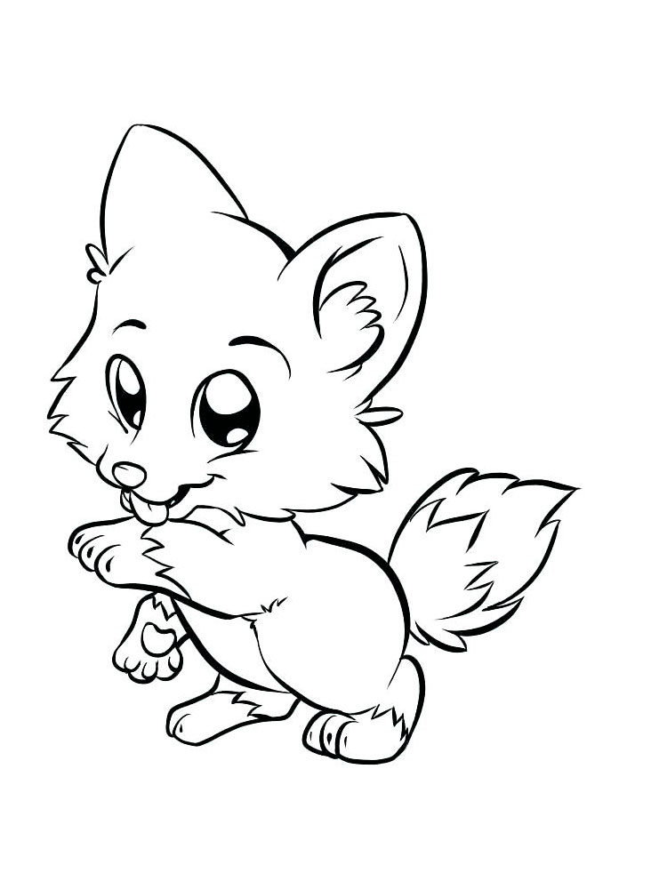
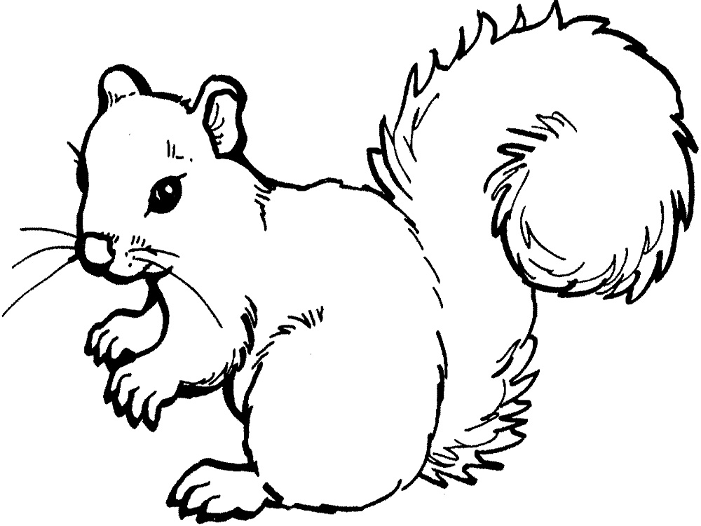
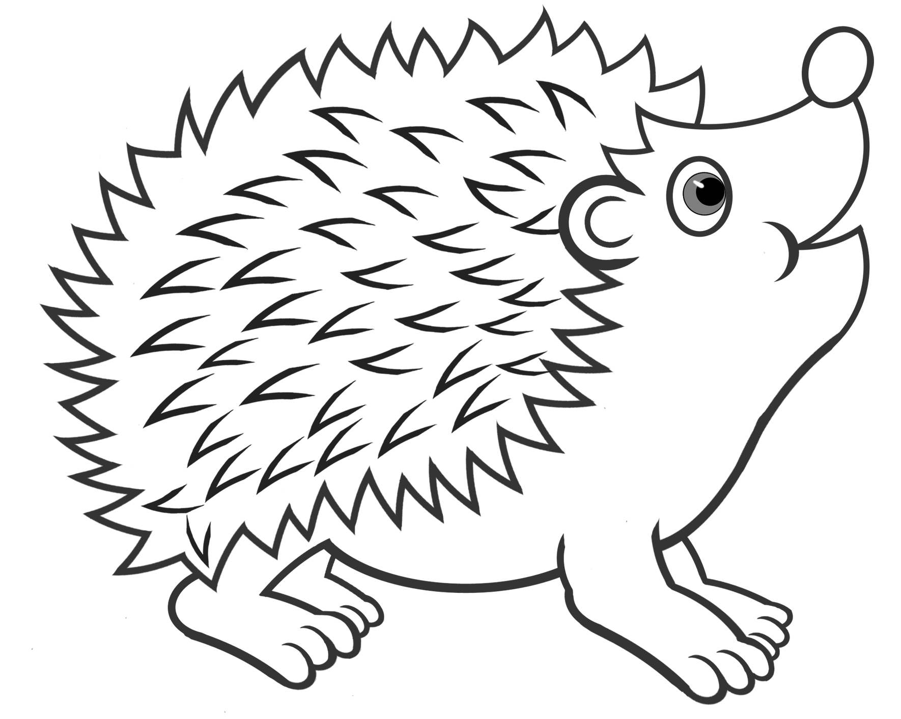

Начало начал:
"CSS расшифровывается для меня как «Ceaseless Screaming of the Sinner» — непрестанный плач грешника..."
- Так думала до недавних пор Ксения, журналист из Сибири, уехавшая за творчеством в Питер.
Давайте знакомиться.
- Сегодня даже я не удивлена тому, как резко я решилась на перемены в профессии. Получив диплом журналиста в томском университете, занимаясь то радиовещанием, то музыкой, 1 сентября 2014 года я переехала в Санкт-Петербург. Работая на радио, я воплощала свой творческий потенциал, а по вечерам иногда баловала себя участием в поэтических или музыкальных баттлах. Спроси меня тогда "Какие навыки в компьютерном деле у тебя есть?", я с гордостью ответила бы: "Могу клавиатуру почистить, Youtube включить".
- Шли годы: работа на радио приносила удовольствие, почтовые курьеры приносили посылки, посланные с любовью моими родителями из Томска, творческая петербургская атмосфера приносила пользу, но почти ничего не приносило доход. Так, журналистка, по выходным поющая на Рубинштейна, пошла подрабатывать на стройку. Нет, опыта у меня не было. Его и не появилось по сути, зато появился еще один довольно крутой жизненный экспириенс.
- Чего-чего, а таких историй в моем багажнике "хоть экспортируй"! Если будет скучно, пиши, с удовольствием расскажу что-нибудь инетерсное:-)
- Подводя итог небольшого знакомства, вспомнилось как кто-то широкоизвестный в узких кругах, сказал:"Каждый, кто перестает учиться – стареет, неважно, в 20 или 80 лет, а любой другой, кто продолжает учиться, остается молодым. Самое главное в жизни – это сохранить мозг молодым!"
Такой экспириенс мне подходит!
Эпилог: В то время, пока я развиваю новые навыки на этом курсе, предлагаю тебе развить фантазию:
Дорисуй в пустой ячейке не достающее, на твой взгляд, животное :)
| Игривые животные | Животные-собиратели | Милые животные |
|---|---|---|
|  |  | |
|  |